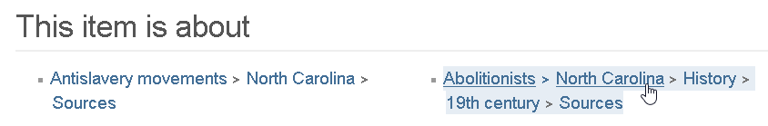
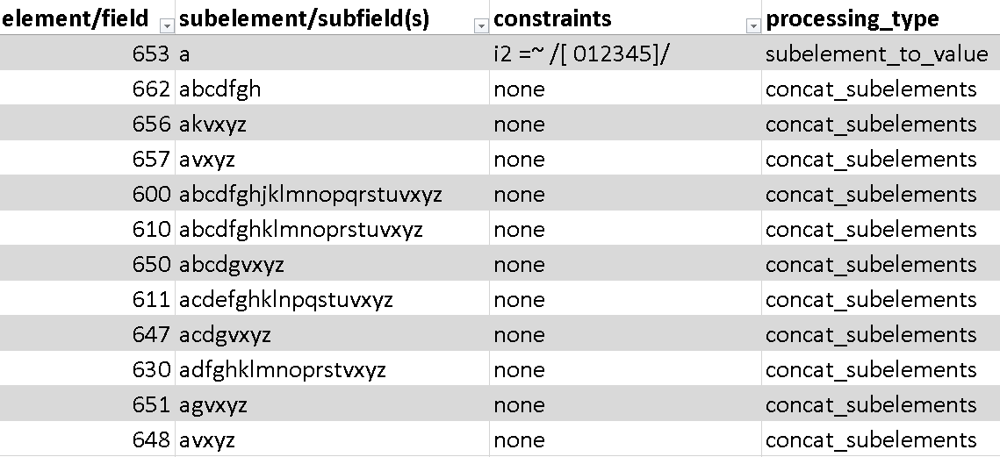
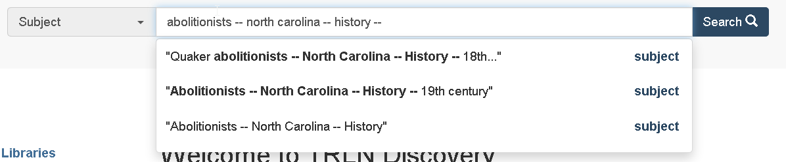
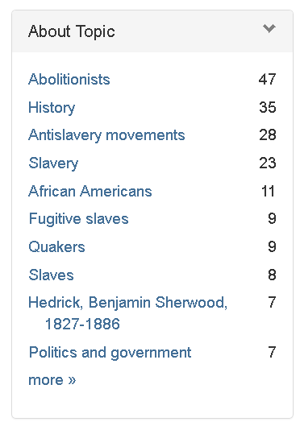
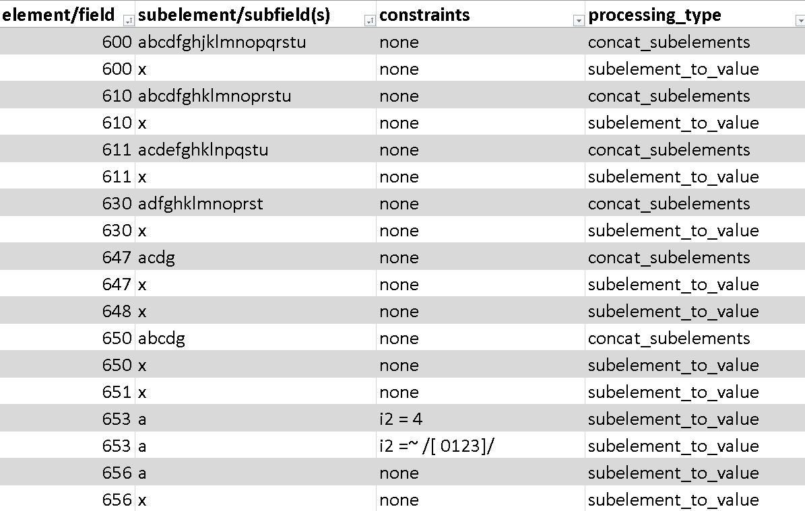
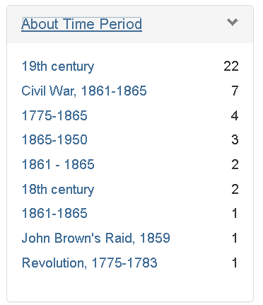
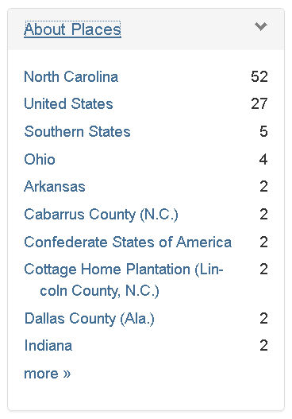
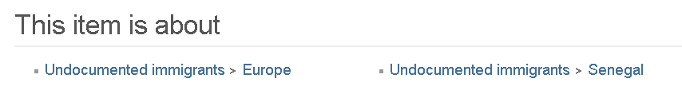

=650 \0$aAbolitionists$zNorth Carolina$xHistory$y19th century$vSources.
"subject_headings": [
"Abolitionists -- North Carolina -- History -- 19th century -- Sources"
]


=650 \0$aAbolitionists$zNorth Carolina$xHistory$y19th century$vSources.
"subject_suggest": [ "Abolitionists -- North Carolina -- History -- 19th century -- Sources" ]

=650 \0$aAbolitionists$zNorth Carolina$xHistory$y19th century$vSources.
"subject_topical": [ "Abolitionists", "History" ]


=650 \0$aAbolitionists$zNorth Carolina$xHistory$y19th century$vSources.
"subject_chronological": [ "19th century" ], "subject_geographic": [ "North Carolina" ]


=650 \0$aIllegal aliens$zEurope.
"subject_topical": [
"Undocumented immigrants"
],
"subject_headings": [
"Undocumented immigrants -- Europe"
],
"subject_headings_remapped": [
"Illegal aliens -- Europe"
]

Not perfect yet… Proof of concept stage! Some weird glitches to look into